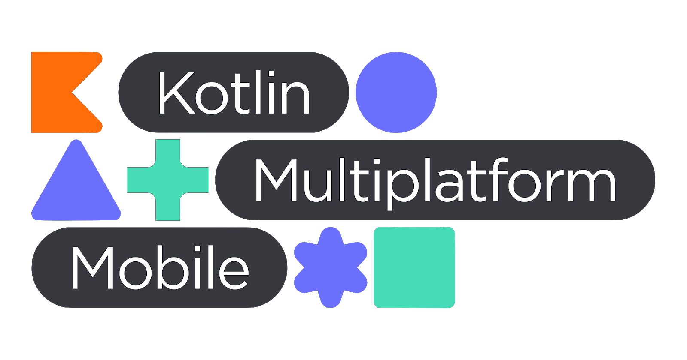
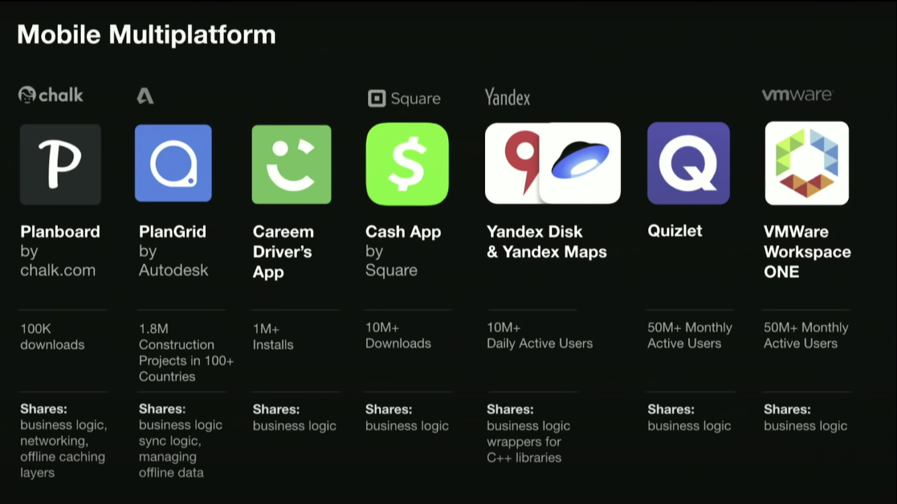
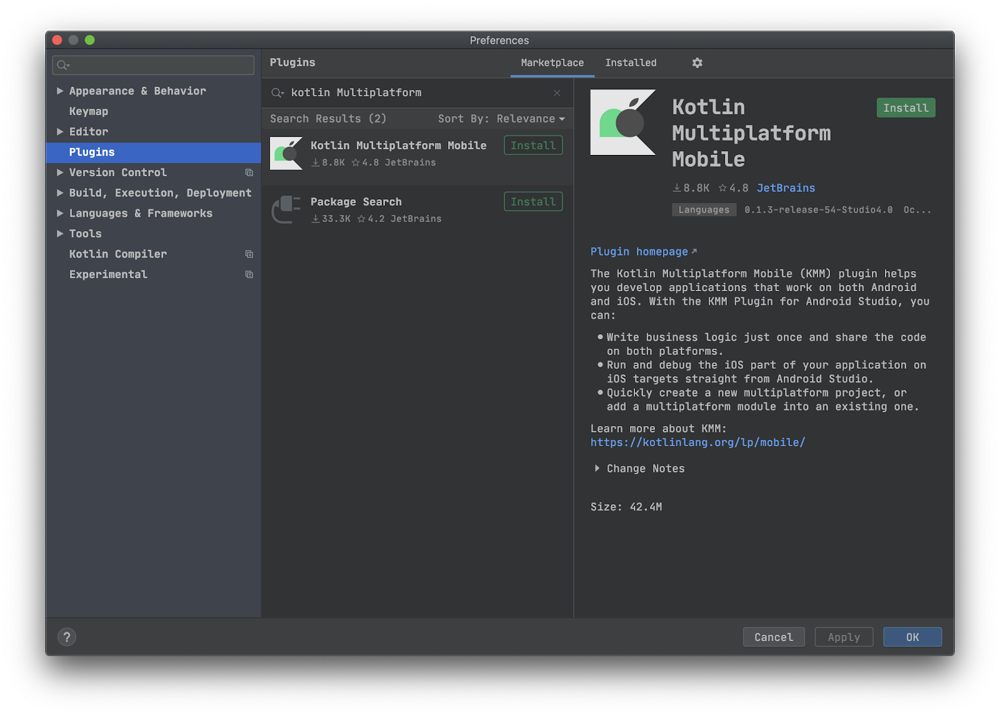
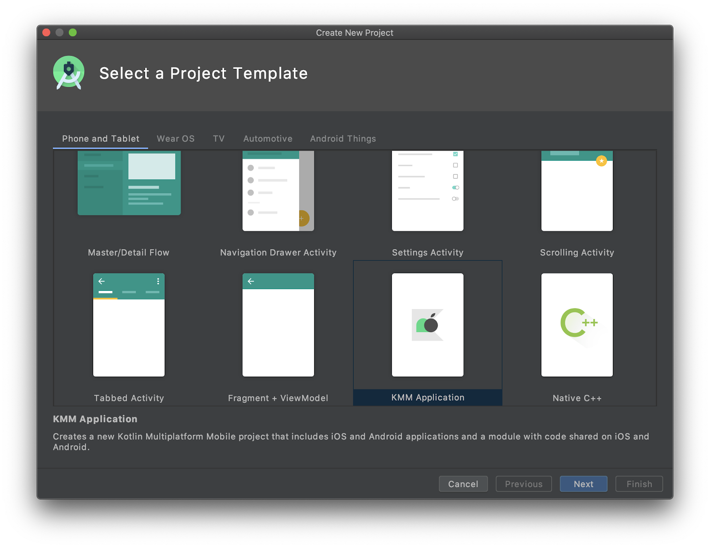
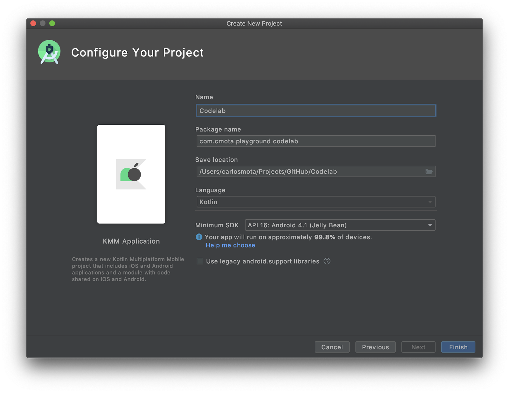
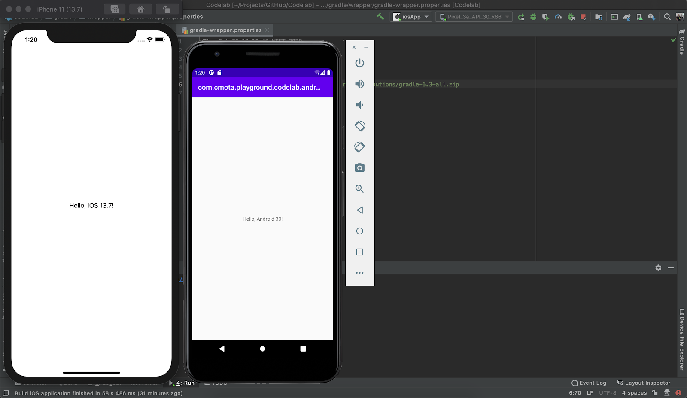

Image downloaded from https://kotlinlang.org/lp/mobile/.
Last Updated: 2020-10-05
Before we start, it's important to mention that Kotlin Multiplatform is in alpha! During development you'll encounter several issues that will require your extra effort to solve and if you're relying on libraries you might need to wait for their updates before thinking to upgrade your kotlin version.
In this codelab, one of my main concerns when designing it was to use the latest kotlin version available, at this moment is version 1.4.10, and then get all the libraries working with it. With this, a couple of ones that I've used in the past were left behind, an example of this is FirestoreKMP, that is no longer supported. Nevertheless, there's a couple others that are being developed by the community and in a few months will be ready for Kotlin 1.4. For the time being and this codelab, I've adapted the exercises to show you how to migrate existing code written on both platforms to one that's going to be shared and with it we create a FirestoreKMM version 0.0.0.0.1.
When we dive into Kotlin Multiplatform we start to see a couple of initials when referring for multiplatform development lets start by identifying them out:
It means you can use Kotlin to develop for all platforms out there: android, iOS, JS, server, etc.
It's the focus on using KMP on mobile development: android and iOS only.
I hear and read this question quite often, why is Kotlin Multiplatform different from the other cross-platform solutions? Why should I focus on moving my project to KMP instead of Flutter for instance?
First, let me start by saying that KMP is not a cross-platform solution, not the way that we've been used to at least. The goal is not to share your entire application code between Android and iOS, for instance, but instead, share your business logic and leave the UI to be developed natively.
There's a really good quote by Kevin Galligan that sums this up:
We've all experienced this one way or another, either having to deal with cross-platform frameworks or by using apps developed with them.
A couple of years ago, iOS redesigned their entire UI. If your app was developed using natively when you'd make that upgrade all the components would automatically have the new look and feel. On the other hand, if you were using one of these frameworks you needed to wait until they updated their widgets to the new design and then compile and publish your app update.
In some cases this took months and on others I've uninstalled the app and looked for alternatives.
With this, it's also important to mention that when you select one of these platforms for your app you need to take into account how long the project will take. If you're going to develop your app during 1-2 years is one thing, if it's a long running project it's another.
Remember that you're committing to a specific framework that needs to:
All points are particularly important, especially when we're talking about long running projects, since you want in five to ten years to still be using that framework and not refactoring your intiring code to a new one just because the company stopped giving its tool support.
With this in Kotlin Multiplatform you can decide what you want to share, you can start by sharing your unit tests, then perhaps the database, your network module, etc. you decide what you want to share.
During the last Kotlin Conf (2019), Andrey Breslav on the opening keynote shared this slide:

A set of applications that are already in production using Kotlin Multiplatform. Each one with it's own approach on what they're sharing between the Android and iOS app.
Do you need more arguments to start? Easy, it's all Kotlin.
There are a couple of options here depending on your own preference. Recently, after KMM plugin was released to Android Studio I've changed my setup to:
You can also use AppCode instead of Xcode or Intellij IDEA instead of Android Studio.
There's a third option, that is to just use Android Studio with the KMM plugin for everything. Although you can compile for the iOS simulator with it if you're going to develop the UI you might face a couple of issues - sometimes there's no code highlight and you don't have auto complete nor UI preview. Which makes sense, since they weren't build for iOS development.
Briefly, my suggestion is to use Android Studio for Android and shared code and leave the iOS to Xcode - that's why it was built for.
Open Android Studio and follow the instructions:

After installing the IDE will restart and the plugin should now be enabled by default.
Although you're going to use a project that already has all the UI, so you can just focus on sharing the code across both platforms. It's important to understand how to create a project from scratch.
For that, open the Android Studio and follow these instructions:


Before compiling the app go to the gradle-wrapper.properties and update the distributionUrl to gradle 6.3:
distributionUrl=https\://services.gradle.org/distributions/gradle-6.3-all.zip
Now you can compile your project! On edit configurations on top of the page just select between Android and iOS - and have fun 🙌.

I've developed two applications for this codelab: one for Android and the other for iOS. The entire business logic is shared between both platforms and only the UI itself is native.
Both applications have the same set of features:
Along with this I've used the following libraries to put everything together:
There's no current version of a Firestore library that supports this with Kotlin 1.4, so we will implement this part ourselves.
For network requests, in this case we will fetch the list of Android conferences from a Gist on Github.
To parse the received data and convert it into a list of Conferences.
Handle the different requests made in the app.
Shared library to retrieve the current system timestamp.
Database used to store all the Conferences locally.
Saves and loads local settings into SharedPreferences or on NSUserDefaults depending on the platform that's running the application.
All of these libraries are open source and with it you can track both the status of the project and check if there's any blocking issue/ solution to a problem that you might face.
I would say that most of us at one time or the other decided to implement their own logger. Since they are platform-specific, it seems to be the best way to dive in into kotlin multiplatform is to create our own logger - Gutenberg.
On Android we use:
Log.d, Log.w and Log.e for debug, warnings and errors respectively.
and in iOS we typically use:
print for everything that we want to log.
So, if our code is running on Android we want to use Log and if we're on iOS print. All of these without using a set of if and else conditions and ideally without shipping the other platform code which is just contributing to increment the dex count (and well, on Android this is quite problematic).
As a rule of thumb, when referring to code that needs to be defined at the platform level I usually use the prefix Platform*, this makes it easier to look for these particular classes.
Let's start by going to shared/src/commonMain/kotlin/<package_name> and create the class PlatformLogger.kt which will contain all the logging methods for Gutenberg:
debugwarnerrorpackage com.cmota.playground.alltogethernow.shared
internal expect class PlatformLogger {
fun debug(tag: String, message: String)
fun warn(tag: String, message: String)
fun error(tag: String, message: String)
}
object Gutenberg {
private val logger = PlatformLogger()
fun d(tag: String, message: String) {
logger.debug(tag, message)
}
fun w(tag: String, message: String) {
logger.warn(tag, message)
}
fun e(tag: String, message: String) {
logger.error(tag, message)
}
}You'll notice a keyword a bit different here - expect.
So, what are you expect-ing? 🤔
In order to define platform specific code on the shared module we use the keyword expect, this needs to later be defined on androidMain and iosMain with value, otherwise you won't be able to compile your project. This happens because the compiler itself has no clue what to expect, in this case what PlatformLogger.kt methods debug, warn and error are.
Navigating to shared/src/androidMain/kotlin/<package_name> add a new kotlin class called the PlatformLogger.kt, where you're going to define what those methods should do when they're called from an Android application. Alternatively, you can move your cursor over PlatformLogger and press alt + enter to automatically generate the classes for the jvm and native.
package com.cmota.playground.alltogethernow.shared
import android.util.Log
internal actual class PlatformLogger {
actual fun debug(tag: String, message: String) {
Log.d(tag, message)
}
actual fun warn(tag: String, message: String) {
Log.w(tag, message)
}
actual fun error(tag: String, message: String) {
Log.e(tag, message)
}
}Looking at the import, we can see that we're using code from the Android SDK itself, in this case we're using Log. So every time the Android app calls Gutenberg.debug(String, String) it will really be calling Log.d(String, String).
Now that we've got the Android platform code defined, we need to do the same thing for iOS. Go to shared/src/iosMain/kotlin/<package_name> and add a new PlatformLogger.kt class.
package com.cmota.playground.alltogethernow.shared
internal actual class PlatformLogger {
actual fun debug(tag: String, message: String) {
print("$tag | $message")
}
actual fun warn(tag: String, message: String) {
print("$tag | $message")
}
actual fun error(tag: String, message: String) {
print("$tag | $message")
}
}Now if you want to print something from the iOS app, you can call directly:
Gutenberg().d(tag: String, message: String)
and it will be printed on the IDE console with the format "tag | message."
Now let's update all of our application logs to our newly created Gutenberg logger. Hit compile and exchange some messages to see them being printed on the console ! 🖨
I've scrapped and edited all the conferences from the Android Study Group into a nice json hosted on GitHub Gists that you can find here. It has all the basic information about a conference:
Where this last field represents if it's "online" or if it was "cancelled".
In this section our goal is to fetch this data, parse it and display it on both applications. Of course, all of this logic will be written only once.
The libraries that are going to be used on this section are:
If you go to src/commonMain/kotlin/<package_name>/data inside entities you'll see that there's a Conference.kt file with the following contents:
package com.cmota.playground.alltogethernow.shared.data.entities
import kotlinx.serialization.Serializable
@Serializable
data class Conference (val name: String,
val city: String,
val country: String,
val date: String,
val logo: String,
val website: String,
val status: String) {
fun isCanceled() = status == "canceled"
}Typically, you would need to create this file. However, to avoid having to create all the accesses at the UI level to the fields here defined, it's already committed. It's important to mention that this class is responsible to hold all of the conference data. Now, let's define the source for our requests and how we can make them with ktor.
Create ConferencesAPI.k inside src/commonMain/kotlin/<package_name>/data and add the following code:
package com.cmota.playground.alltogethernow.shared.data
import io.ktor.client.HttpClient
import io.ktor.client.request.*
private const val BASE_URL = "https://gist.githubusercontent.com/cmota/"
private const val ENDPOINT = "c6b15f54c9fed96750e5828b2f001249/raw/d7fc5e1b711107583959663056e6643f24ccae81/conferences.json"
class ConferencesAPI {
private val client = HttpClient()
suspend fun fetchConferences() = client.get<String>("$BASE_URL$ENDPOINT")
}If you're already familiarized with ktor you might see something a bit odd - where's the call to install(JsonFeature)? Typically we always need it if our response content type is application/json which it doesn't happen when we try to retrieve data from a Gist which is text/plain.
With this, the serialization won't work directly and this is why I've done it on GetConferences.kt class as you'll see in a second.
Now that we've got our network interface defined let's create our bridge with the domain layer. For this go to src/commonMain/kotlin/<package_name/domain and create the class GetConferences.kt with the following content:
package com.cmota.playground.alltogethernow.shared.domain
import com.cmota.playground.alltogethernow.shared.Gutenberg
import com.cmota.playground.alltogethernow.shared.data.ConferencesAPI
import com.cmota.playground.alltogethernow.shared.data.entities.Conference
import kotlinx.coroutines.coroutineScope
import kotlinx.serialization.decodeFromString
import kotlinx.serialization.json.Json
private const val TAG = "GetConferences"
class GetConferences(private val api: ConferencesAPI) {
suspend operator fun invoke(onSuccess: (List<Conference>) -> Unit, onFailure: (Exception) -> Unit) {
try {
//1
val result = api.fetchConferences()
//2
val conferences = Json.decodeFromString<List<Conference>>(result)
Gutenberg.d(TAG, "Result:$conferences")
coroutineScope {
//3
onSuccess(conferences)
}
} catch (e: Exception) {
coroutineScope {
//4
onFailure(e)
}
}
}
}You can see here that we're already using Gutenberg as our logger to log all the conferences that were retrieved.
Here's a step-by-step breakdown of this logic:
fetchConferences() that we've previously defined on ConferencesAPI.kt. It will be responsible to make the network requests, that we're going to parse on the next instruction.text/plain you'll need to parse it so we can have a list of all the conferences available.onSuccess (received as parameter) that will later notify the UI that there's new data available.onFailure is called in opposite. This allows the UI to respond accordingly. An example of these failures, can be a request made when the device is not connected to the internet.Now let's go to the presentation layer and create the ConferenceListPresenter.kt. This file should be added into src/commonMain/kotlin/<package_name>/presentation.
package com.cmota.playground.alltogethernow.shared.presentation
import com.cmota.playground.alltogethernow.shared.domain.GetConferences
import com.cmota.playground.alltogethernow.shared.domain.defaultDispatcher
import com.cmota.playground.alltogethernow.shared.presentation.cb.IConferenceData
import kotlinx.coroutines.launch
import kotlin.coroutines.CoroutineContext
class ConferenceListPresenter(private val conferences: GetConferences,
private val coroutineContext: CoroutineContext = defaultDispatcher
) {
//1
private var view: IConferenceData? = null
private lateinit var scope: PresenterCoroutineScope
//2
fun attachView(currView: IConferenceData) {
view = currView
scope = PresenterCoroutineScope(coroutineContext)
fetchConferenceList()
}
//3
fun detachView() {
if (view == null) {
return
}
view = null
scope.viewDetached()
}
private fun fetchConferenceList() {
scope.launch {
//4
conferences(
onSuccess = { view?.onConferenceDataFetched(it) },
onFailure = { view?.onConferenceDataFailed(it) }
)
}
}
}This is the class that the UI (both Android and iOS) will call in order to get a list of conferences. Let's analyse it into further detail:
attachView but it could easily be called fetchConferences for instance. The naming chosen here is just to be easier to understand when it should be called.detachView which will cancel and destroy all the references to the previous defined fields.attachView, and the ConferenceListPresenter.kt itself receives the GetConferences class that we've defined before. These two calls: onSuccess and onFailure represent the calls made inside invoke where we called the first one when new data was available and the second one when the operation failed. Here, this calls will be mapped into calling the interface onConferenceDataFetched and onConferenceDataFailed which will call the corresponding methods at the UI level.Now that we've been talking about the IConferenceData.kt interface, let's create it under src/commonMain/kotlin/<package_name>/presentation/cb and add the following definitions:
package com.cmota.playground.alltogethernow.shared.presentation.cb
import com.cmota.playground.alltogethernow.shared.data.entities.Conference
interface IConferenceData {
fun onConferenceDataFetched(conferences: List<Conference>)
fun onConferenceDataFailed(e: Exception)
}We're almost there! There's only three more instructions that we need to add before calling them from the UI. Let's head up to ServiceLocator.kt and add the following declarations:
package com.cmota.playground.alltogethernow.shared
import com.cmota.playground.alltogethernow.shared.data.ConferencesAPI
import com.cmota.playground.alltogethernow.shared.domain.GetConferences
import com.cmota.playground.alltogethernow.shared.presentation.ConferenceListPresenter
import kotlin.native.concurrent.ThreadLocal
@ThreadLocal
object ServiceLocator {
//Message fields were already and are defined here
private val conferencesAPI by lazy { ConferencesAPI() }
private val getConferences: GetConferences
get() = GetConferences(conferencesAPI)
val getConferencePresenter: ConferenceListPresenter
get() = ConferenceListPresenter(getConferences)
}Now that we've got all the classes and methods defined we can jump in into the Android app and make these calls from there.
Let's go to androidApp/src/main/java/<package_name> and look inside the fragments folder for the MessagesFragment.kt file. All the UI is already defined and created, however we don't have any call to get the conferences content.
Previously, you've see that the UI needed to declare an interface in order to be notified when there was new content available/when the request operation failed, so let's start by adding it to the implemented classes and define those two methods:
package com.cmota.playground.alltogethernow.androidApp.fragments
import com.cmota.playground.alltogethernow.shared.ServiceLocator
import com.cmota.playground.alltogethernow.shared.data.entities.Conference
import com.cmota.playground.alltogethernow.shared.presentation.cb.IConferenceData
import com.cmota.playground.alltogethernow.shared.Gutenberg
private const val TAG = "ConferencesFragment"
//1
class ConferencesFragment : Fragment(), IConferenceData {
//2
private val presenterConferences by lazy { ServiceLocator.getConferencePresenter }
private fun setup() {
//Other UI instructions were omitted
//3
presenterConferences.attachView(this)
}
//region IConferenceData
//4
override fun onConferenceDataFetched(conferences: List<Conference>) {
Gutenberg.d(TAG, "New conference data fetched: $conferences")
val adapter = binding.rvConferences.adapter as ConferencesListAdapter
adapter.submitList(conferences)
}
override fun onConferenceDataFailed(e: Exception) {
Gutenberg.e(TAG, "Unable to retrieve conference data. Reason: $e")
}
//endregion IConferenceData
}Diving into detail into this newly added logic, you can see:
IConferenceData. It's going to be used to notify the UI from the shared module when new information is available.presenterConferences is a field that corresponds to the ConferenceListPresenter that we've defined on the shared module.attachView which will be responsible for retrieving the conferences list from the server.Now let's hit compile and run the Android application! Go over to the conferences tab, you should see the list of the next events to attend 🤖 .
It's now time to get back at the IDE and do the same calls for the iOS app. Let's navigate to iosApp/iosApp/ConferencesViewController.swift and define the following extension:
extension ConferencesViewController: IConferenceData {
func onConferenceDataFailed(e: KotlinException) {
Gutenberg().w(tag: "onConferenceDataFailed", message: "Error:\(e)")
}
func onConferenceDataFetched(conferences: [Conference]) {
for conference in conferences {
Gutenberg().d(tag: "onConferenceDataFetched", message: conference.name)
}
self.conferences = conferences
self.tableView.reloadData()
}
}And now that everything is defined you just need to add the PresenterConference initialization and the calls to attachView to fetch the list and detachView to remove the subscription:
class ConferencesViewController: UIViewController {
private let presenterConference = ServiceLocator.init().getConferencePresenter
override func viewDidAppear(_ animated: Bool) {
presenterConference.attachView(currView: self)
}
override func viewWillDisappear(_ animated: Bool) {
presenterConference.detachView()
}
}Now that we've got everything ready, compile and run the iOS app 🍏.
Now that we've implemented our network label, let's go to the next feature: store this data locally on a database. We want to show the latest data at all times, so if the request fails you'll return the information stored on the local database.
This is going to be done thanks to an amazing library called sqldelight.
Before starting let's look at our build.gradle.kts inside the shared module to see where the sqldelight is defined:
plugins {
id("com.squareup.sqldelight")
}sqldelight {
database("ConferenceDb") {
packageName = "data"
}
}Where we define the sq. database is going to be located so sqldelight can generate the corresponding classes and the ConferenceDb represents the generated file that's going to allow us to communicate with the database.
And let's start with this definition. Go to shared/src/commonMain/sqldelight/data and create a new directory called model and inside it ConferenceModel.sq with the following sql instructions so the corresponding database can be created and accessed.
CREATE TABLE ConferenceModel (
id TEXT NOT NULL PRIMARY KEY,
name TEXT NOT NULL,
city TEXT NOT NULL,
country TEXT NOT NULL,
date TEXT NOT NULL,
logo TEXT NOT NULL,
website TEXT NOT NULL,
status TEXT NOT NULL
);
insertOrReplaceConference:
INSERT OR REPLACE INTO ConferenceModel(id, name, city, country, date, logo, website, status) VALUES (?, ?, ?, ?, ?, ?, ?, ?);
selectAllConferences:
SELECT *
FROM ConferenceModel;Once you hit compile you'll see that a couple of files were generated under:
If you open for instance ConferenceDbImpl.kt you'll see all the instructions that you need to insert/update and get all conferences from the database.
At the current version, 1.4.3, sqldelight requires that you define platform dependent code in order to create your databases on the device. So let's start by creating our Platform* classes.
Go to the shared module directory: shared/src/commonMain/kotlin/<package_name> and add the PlatformDatabase.kt.
package com.cmota.playground.alltogethernow.shared
import data.ConferenceDb
expect class PlatformDatabase {
fun createDatabase(): ConferenceDb
}You already know how this works! You've said that you expect that the platforms would define what PlatformDatabase is, so let's go to:
And create the actual implementation of PlatformDatabase.kt for Android:
package com.cmota.playground.alltogethernow.shared
import android.content.Context
import com.squareup.sqldelight.android.AndroidSqliteDriver
import com.squareup.sqldelight.db.SqlDriver
import data.ConferenceDb
lateinit var appContext: Context
actual class PlatformDatabase {
actual fun createDatabase(): ConferenceDb {
return ConferenceDb(createDriver())
}
private fun createDriver(): SqlDriver {
return AndroidSqliteDriver(ConferenceDb.Schema, appContext, "appData.db")
}
}The local database is going to be called appData.db.
Looking close to the code it's possible to identify that it requires the application context in order to be created, which means that the Android app itself needs to define appContext. In order to do this, go over your android app under androidApp/src/main/java/<package_name> and in AppApplication.kt add:
package com.cmota.playground.alltogethernow.androidApp
import android.app.Application
import com.cmota.playground.alltogethernow.shared.appContext
class AppApplication : Application() {
override fun onCreate() {
super.onCreate()
appContext = this
}
}Since the application is the first class of the Android app to be loaded and we've defined appContext as lateinit var we need to initialize it on onCreate. This way we can guarantee that there won't be any accesses to the database without it being initialized.
Now navigate to the iosMain directory and once again create the actual implementation of PlatformDatabase.kt:
package com.cmota.playground.alltogethernow.shared
import com.squareup.sqldelight.db.SqlDriver
import com.squareup.sqldelight.drivers.native.NativeSqliteDriver
import data.ConferenceDb
actual class PlatformDatabase {
actual fun createDatabase(): ConferenceDb {
return ConferenceDb(createDriver())
}
private fun createDriver(): SqlDriver {
return NativeSqliteDriver(ConferenceDb.Schema, "appData.db")
}
}And that's it for the iOS side.
Now let's get back to the shared module and create the ConferenceDAO.kt so we can easily access the generated ConferenceDb.kt. To do this go to the directory shared/src/commonMain/kotlin/<package_name>/domain/dao and add this new file.
package com.cmota.playground.alltogethernow.shared.domain.dao
import com.cmota.playground.alltogethernow.shared.data.entities.Conference
import data.ConferenceDb
class ConferenceDAO(database: ConferenceDb) {
private val db = database.conferenceModelQueries
internal fun insertOrReplace(conference: Conference) {
db.insertOrReplaceConference(
id = "${conference.name}-${conference.country}-${conference.date}",
name = conference.name,
city = conference.city,
country = conference.country,
date = conference.date,
logo = conference.logo,
website = conference.website,
status = conference.status)
}
internal fun getAllConferences(): List<Conference> {
val data = db.selectAllConferences().executeAsList()
val conferences = mutableListOf<Conference>()
for (item in data) {
conferences += Conference(
item.name,
item.city,
item.country,
item.date,
item.logo,
item.website,
item.status)
}
return conferences
}
}This will get the fields defined on the Conference data class and either add them to the database via insertOrReplace or retrieve them from there on getAllConferences.
Now that we've got all the platform dependent code defined, open once again GetConferences.kt and let's store on the local database the conferences retrieved from the server:
package com.cmota.playground.alltogethernow.shared.domain
import com.cmota.playground.alltogethernow.shared.Gutenberg
import com.cmota.playground.alltogethernow.shared.data.ConferencesAPI
import com.cmota.playground.alltogethernow.shared.data.entities.Conference
import com.cmota.playground.alltogethernow.shared.domain.dao.ConferenceDAO
import kotlinx.coroutines.coroutineScope
import kotlinx.serialization.decodeFromString
import kotlinx.serialization.json.Json
private const val TAG = "GetConferences"
//1
class GetConferences(private val api: ConferencesAPI, private val dao: ConferenceDAO) {
suspend operator fun invoke(onSuccess: (List<Conference>) -> Unit, onFailure: (Exception) -> Unit) {
try {
val result = api.fetchConferences()
val conferences = Json.decodeFromString<List<Conference>>(result)
Gutenberg.d(TAG, "Result:$conferences")
//2
for (conference in conferences) {
dao.insertOrReplace(conference)
}
coroutineScope {
onSuccess(conferences)
}
} catch (e: Exception) {
coroutineScope {
//3
val conferences = dao.getAllConferences()
if (conferences.isEmpty()) {
onFailure(e)
} else {
onSuccess(conferences)
}
}
}
}
}Let's analyze this code step by step:
Finally, let's open the ServiceLocator.kt and declare the ConferenceDAO object and update the call to GetConferences():
package com.cmota.playground.alltogethernow.shared
import com.cmota.playground.alltogethernow.shared.data.ConferencesAPI
import com.cmota.playground.alltogethernow.shared.domain.GetConferences
import com.cmota.playground.alltogethernow.shared.domain.dao.ConferenceDAO
import com.cmota.playground.alltogethernow.shared.presentation.ConferenceListPresenter
import kotlin.native.concurrent.ThreadLocal
@ThreadLocal
object ServiceLocator {
private val conferencesAPI by lazy { ConferencesAPI() }
private val conferenceDao by lazy { ConferenceDAO(PlatformDatabase().createDatabase()) }
private val getConferences: GetConferences
get() = GetConferences(conferencesAPI, conferenceDao)
val getConferencePresenter: ConferenceListPresenter
get() = ConferenceListPresenter(getConferences)
}Now let's hit compile and run and let's see everything working 🚀.
Let's dive into another library! This time the multiplatform-settings. Briefly, it gives you the possibility to use Android's SharedPreferences or iOS NSUserDefaults depending on the platform that you're currently using.
This is already added on build.gradle.kts from the shared module, on the commonMain dependencies declaration:
implementation("com.russhwolf:multiplatform-settings:0.6.2")Let's start by creating the PlatformSettings.kt that we are expect-ing. Similar to other Platform* files that you're creating, it should be added to shared/src/commonMain/kotlin/<package_name>.
package com.cmota.playground.alltogethernow.shared
import com.cmota.playground.alltogethernow.shared.data.SettingsRepository
expect object PlatformSettings {
val settingsRepository: SettingsRepository
fun createSettingsRepository(): SettingsRepository
}And now the actual implementation on shared/src/androidMain/kotlin/<package_name>:
package com.cmota.playground.alltogethernow.shared
import androidx.preference.PreferenceManager
import com.cmota.playground.alltogethernow.shared.data.SettingsRepository
import com.russhwolf.settings.AndroidSettings
actual object PlatformSettings {
actual val settingsRepository : SettingsRepository by lazy {
createSettingsRepository()
}
actual fun createSettingsRepository(): SettingsRepository {
val sharedPrefs = PreferenceManager.getDefaultSharedPreferences(appContext)
val settings = AndroidSettings(sharedPrefs)
return SettingsRepository(settings)
}
}That is going to use Android's SharedPreferences to store the required content, in this case the application settings.
Now let's add the equivalent file to shared/src/iosMain/kotlin/<package_name>:
package com.cmota.playground.alltogethernow.shared
import com.cmota.playground.alltogethernow.shared.data.SettingsRepository
import com.russhwolf.settings.AppleSettings
import platform.Foundation.NSUserDefaults
actual object PlatformSettings {
actual val settingsRepository : SettingsRepository by lazy {
createSettingsRepository()
}
actual fun createSettingsRepository(): SettingsRepository {
return SettingsRepository(AppleSettings(NSUserDefaults.standardUserDefaults))
}
}Which uses NSUserDefaults.
Now that we've got our settings defined, we're going to use them in two places:
So let's create these two settings on the shared module. Create a SettingsRepository.kt on shared/src/commonMain/kotlin/<package_name>/data and add:
package com.cmota.playground.alltogethernow.shared.data
import com.cmota.playground.alltogethernow.shared.deviceName
import com.russhwolf.settings.Settings
private const val SETTING_ONLY_ONLINE = "setting_show_only_online"
private const val SETTING_MY_USERNAME = "setting_my_username"
class SettingsRepository(private val settings: Settings) {
private val appSettings: Settings = createAppSettings(settings)
private fun createAppSettings(settings: Settings): Settings {
settings.putString(SETTING_MY_USERNAME, deviceName())
settings.putBoolean(SETTING_ONLY_ONLINE, false)
return settings
}
fun getUsername() = appSettings.getString(SETTING_MY_USERNAME, deviceName())
fun setUsername(username: String) {
appSettings.putString(SETTING_MY_USERNAME, username)
}
fun shouldShowOnlyOnlineConferences() = appSettings.getBoolean(SETTING_ONLY_ONLINE, false)
fun onlyOnlineConferences(state: Boolean) {
appSettings.putBoolean(SETTING_ONLY_ONLINE, state)
}
}Now that we've got both settings defined, let's first open the GetConferences.kt class, that's under shared/src/commonMain/kotlin/<package_name>/domain, and add this logic to filter only for only conferences when this setting is enabled:
package com.cmota.playground.alltogethernow.shared.domain
import com.cmota.playground.alltogethernow.shared.PlatformSettings.settingsRepository
class GetConferences(private val api: ConferencesAPI, private val dao: ConferenceDAO) {
suspend operator fun invoke(onSuccess: (List<Conference>) -> Unit, onFailure: (Exception) -> Unit) {
try {
// Request and parse logic
//Check current state of toggle only online
val availableConferences = if (settingsRepository.shouldShowOnlyOnlineConferences()) {
conferences.filter { !it.isCanceled() }
} else {
conferences
}
coroutineScope {
onSuccess(availableConferences)
}
} catch (e: Exception) {
// ...
}
}
}Finally, let's navigate to the android app by going to androidApp/src/main/java/<package_name>/Fragments and open the SettingsFragment.kt, so the user can change these values.
Here we've got the setup method that's waiting for it's content to be defined:
private fun setup() {
binding.cbOnline.isChecked = settingsRepository.shouldShowOnlyOnlineConferences()
binding.cbOnline.setOnCheckedChangeListener { _, isChecked ->
settingsRepository.onlyOnlineConferences(isChecked)
}
binding.etUsername.setText(settingsRepository.getUsername())
binding.etUsername.setOnFocusChangeListener { _, hasFocus ->
if (!hasFocus) {
val text = binding.etUsername.text.toString()
if (text.isNotEmpty()) {
settingsRepository.setUsername(text)
}
}
}
}And in MessagesFragment.kt, update the loadMessages() and sendMessages() methods to instead of using the deviceName() as the username, retrieve the value stored on settings.
private fun setup() {
binding.cbOnline.isChecked = settingsRepository.shouldShowOnlyOnlineConferences()
binding.cbOnline.setOnCheckedChangeListener { _, isChecked ->
settingsRepository.onlyOnlineConferences(isChecked)
}
binding.etUsername.setText(settingsRepository.getUsername())
binding.etUsername.setOnFocusChangeListener { _, hasFocus ->
if (!hasFocus) {
val text = binding.etUsername.text.toString()
if (text.isNotEmpty()) {
settingsRepository.setUsername(text)
}
}
}
}
import com.cmota.playground.alltogethernow.shared.PlatformSettings.settingsRepository
private fun loadMessages() {
// Load messages
val messages = mutableListOf<Message>()
for (document in snapshot.documents) {
val message = Message(
document.id,
"${document.data?.get("username")}",
"${document.data?.get("content")}",
"${document.data?.get("timestamp")}",
document.data?.get("username") == settingsRepository.getUsername()
)
messages += message
}
//...
}
}
private fun sendMessage(content: String) {
val message = hashMapOf(
"username" to settingsRepository.getUsername(),
"content" to content,
"timestamp" to "${System.currentTimeMillis()}"
)
//...
}Now let's go to the SettingsViewController.swift inside iosApp/iosApp and update this this class to contain the equivalent iOS logic:
override func viewDidLoad() {
super.viewDidLoad()
let online = PlatformSettings.init().settingsRepository.shouldShowOnlyOnlineConferences()
toggleOnline.setOn(online, animated: true)
toggleOnline.addTarget(self, action: #selector(onSwitchValueChanged), for: .touchUpInside)
let username = PlatformSettings.init().settingsRepository.getUsername()
editTextUsername.text = username
editTextUsername.addTarget(self, action: #selector(onTextFieldValueChanged(_:)), for: .editingChanged)
}
@objc func onSwitchValueChanged(_ toggleOnline: UISwitch) {
Gutenberg().d(tag: "onSwitchValueChanged", message:"\(toggleOnline.isOn)")
PlatformSettings.init().settingsRepository.onlyOnlineConferences(state: toggleOnline.isOn)
}
@objc func onTextFieldValueChanged(_ textField: UITextField) {
let username = editTextUsername.text ?? ""
Gutenberg().d(tag: "onTextFieldValueChanged", message: username)
PlatformSettings.init().settingsRepository.setUsername(username: username)
}Finally, let's update the ChatViewController.swift to use the username defined on settings instead of deviceName().
private func sendMessage(message: String) {
let id = Firestore.firestore().collection(collection).document().documentID
let date = Date()
let formatter = DateFormatter()
formatter.dateFormat = "HH:mm"
let message = ["username": PlatformSettings.init().settingsRepository.getUsername(),
"content": message,
"timestamp": "\(Int64((date.timeIntervalSince1970 * 1000.0).rounded()))"]
Firestore.firestore().collection("dcEMEA").document(id).setData(message) { (error) in
guard let error = error else {
Gutenberg().d(tag: TAG, message: "message was sent: \(message)")
return
}
Gutenberg().e(tag: TAG, message: "error sending message: \(message); error: \(error.localizedDescription)")
}
}
extension ChatViewController: UITableViewDelegate, UITableViewDataSource {
func tableView(_ tableView: UITableView, numberOfRowsInSection section: Int) -> Int {
return messages.count
}
func tableView(_ tableView: UITableView, cellForRowAt indexPath: IndexPath) -> UITableViewCell {
let message = messages[indexPath.row]
let isIncoming = message.user != PlatformSettings.init().settingsRepository.getUsername()
let cell = tableView.dequeueReusableCell(withIdentifier: isIncoming ? "IncomingMessageCell" : "OutgoingMessageCell", for: indexPath) as! ChatMessageCell
cell.updateWithName(isIncoming ? message.user : "", message: message.content, isIncoming: isIncoming)
return cell
}
}All done! Now let's compile and run the app and filter the conferences list only online and try to update your username 🤲.
Time is relative, right? Currently the way that we deal with it in our app is different on both platforms. Since our goal is to share the most logic possible we need to find a common ground for this. And this is why we have such good things like the kotlinx-datetime.
This is already added on build.gradle.kts from the shared module, on the commonMain dependencies declaration:
implementation("org.jetbrains.kotlinx:kotlinx-datetime:0.1.0")We're going to see this in further detail on the next chapter - migrating code to multiplatform, but for now let's just see how to use it.
In order to get the current unix timestamp (the equivalent of System.currentTimeInMillis()) you just need to call:
import kotlinx.datetime.Clock
import kotlinx.datetime.Instant
val now: Instant = Clock.System.now()
now.toEpochMilliseconds()In the beginning of this year I was using touchlab's FirestoreKMP on a KMM application project that I've made for testing. This library works really well, but unfortunately it only supports Kotlin until version 1.3.50. There's an amazing talk by Kevin Galligan at Øredev - Kotlin Multiplatform Library Development - where he explains how they've put everything together using typealias and cinterop. And yes, this is as challenging as you might think.
A couple more libraries for Firebase, and in this case Firestore are being developed but at this moment none of them seems to support Kotlin 1.4.10 at the moment of this Codelab:
In any case it's always good to look at them before trying to port the Firestore code from an Android/iOS project into the shared model. You can end up using a lot of time, especially on native - trust me.
It's true that everything is working fine at this moment. You're able to exchange and receive messages between devices of the same or different platforms. So, why do we want to move this to a shared module?
Consistency (and time).
What happens when a new requirement pops on where the behaviour of this feature changes? Let's imagine that you want to have different threads per user instead of a single group chat. You'll need to go through a similar process to this one:
And then an issue arises.
You'll need to fix it on each of these platforms and the Q&A team needs to repeat the previous steps. What if we'd moved it to a shared module? Won't it take less time to develop/testing in the future and will improve the consistency now?
Yes.
Let's start by looking at the Android and iOS code that we already have with the existing Firestore implementation. On Android if you open MessagesFragment.kt that's located under androidApp/src/main/java/<package_name>/fragments you'll see the loadMessages and sendMessage methods that deal with this logic. On iOS the same is implemented under ChatViewController.swift located inside iosApp/iosApp and corresponds to the same method declarations.
You'll see two different methods that deal with the Firestore communication:
loadMessages That registers on "dcEMEA" channel on Firebase and retrieves all the messages that are stored there. When a new message is added to Firestore this callback is automatically triggered and the UI is updated via the submitList call.
sendMessageCreates a message object with the username information along with what I'd written on the EditText and the current timestamp and sends it to the "dcEMEA" channel. Once it's processed it can either call the onSuccessListener or onFailureListener depending if the message was delivered or not.
Now we want to move all of this logic to the shared module. First, we would typically need to add all of these libraries to the build.gradle.kts inside the shared module. To optimize this process they're already there.
On Android
val commonMain by getting {
dependencies {
// ...
implementation("com.google.firebase:firebase-firestore-ktx:21.7.0")
}
}On iOS
cocoapods {
pod("FirebaseFirestore")
}Moving both methods to the shared module would probably take more time than the one that you've spent doing this Codelab, so you're just going to move the sendFirestoreData to the shared module.
Since this is code that is going to be platform dependent, you'll need to create a PlatformFirebaseFirestore.kt class on shared/src/commonMain/kotlin/<package_name>.
package com.cmota.playground.alltogethernow.shared
import com.cmota.playground.alltogethernow.shared.data.entities.Message
import com.cmota.playground.alltogethernow.shared.presentation.cb.IMessageData
expect class FirebaseFirestore
expect fun getFirebaseInstance(): FirebaseFirestore
expect fun sendMessage(message: String, onResult: (Boolean) -> Unit)Analysing the above code were also expect-ing a FirebaseFirestore class since the library being used will be different from Android and iOS.
The sendMessage method receives the message that it wants to send and a callback that's going to be called when the message is processed by the Firestore call. It's going to be true in case it's delivered and false otherwise.
Now let's go to androidMain and define what actual-ly this classes and methods are. Add the corresponding PlatformFirebaseFirestore.kt on shared/src/androidMain/kotlin/<package_name>.
package com.cmota.playground.alltogethernow.shared
import com.cmota.playground.alltogethernow.shared.data.entities.Message
import com.cmota.playground.alltogethernow.shared.data.SETTING_MY_USERNAME
import com.cmota.playground.alltogethernow.shared.Gutenberg
import com.google.firebase.firestore.FirebaseFirestore.getInstance
import kotlinx.datetime.Clock
import kotlinx.datetime.Instant
//1
actual typealias FirebaseFirestore = com.google.firebase.firestore.FirebaseFirestore
//2
actual fun getFirebaseInstance() = getInstance()
const val TAG = "PlatformFirebaseFirestore-Android"
//3
actual fun sendMessage(message: String, onResult: (Boolean) -> Unit) {
//4
val now: Instant = Clock.System.now()
now.toEpochMilliseconds()
//5
val username = PlatformSettings.settingsRepository.appSettings.find { it.key == SETTING_MY_USERNAME }?.get() ?: "default"
val content = hashMapOf(
"username" to username,
"content" to message,
"timestamp" to "$now"
)
val id: String = getFirebaseInstance().collection("collection_name").document().id
//6
getFirebaseInstance().collection(COLLECTION_DCEMEA).document(id)
.set(content)
.addOnSuccessListener { onResult(true) }
.addOnFailureListener { onResult(false) }
}Let's break down this logic step-by-step to better understand what's being done here:
FirebaseFirestore class is going to be platform specific. Meaning that in one platform corresponds to com.google.firebase.firestore.FirebaseFirestore, and in the other (iOS) it will be FIRFirestore. So we need to use the typealias to make the distinction between both.getInstance() call returns a FirebaseFirestore instance that's going to later be used to send content to Firestore.FirebaseFirestore library.Now let's head to shared/src/iosMain/kotlin/<package_name> and create the corresponding PlatformFirebaseFirestore.kt.
package com.cmota.playground.alltogethernow.shared
import com.cmota.playground.alltogethernow.shared.data.entities.Message
import com.cmota.playground.alltogethernow.shared.data.SETTING_MY_USERNAME
import cocoapods.FirebaseFirestore.FIRFirestore
import cocoapods.FirebaseFirestore.FIRCollectionReference
import cocoapods.FirebaseFirestore.FIRQuery
import cocoapods.FirebaseFirestore.FIRDocumentReference
import kotlinx.datetime.Clock
import kotlinx.datetime.Instant
//1
actual typealias FirebaseFirestore = FIRFirestore
//2
actual fun getFirebaseInstance() = FIRFirestore.firestore()
//3
class CollectionReference(override val ios: FIRCollectionReference) : Query(ios) {
val path: String
get() = ios.path
fun add(data: Any) = DocumentReference(ios.addDocumentWithData(data as Map<Any?, *>, null))
}
class DocumentReference(val ios: FIRDocumentReference) {
val id: String
get() = ios.documentID
val path: String
get() = ios.path
}
open class Query(open val ios: FIRQuery) {
// Nothing is required for the calls defined for this project
}
//4
fun collection(firestore: FirebaseFirestore, collectionPath: String) = CollectionReference(firestore.collectionWithPath(collectionPath))
//5
actual fun sendMessage(message: String, onResult: (Boolean) -> Unit) {
//6
val now: Instant = Clock.System.now()
now.toEpochMilliseconds()
//7
val username = PlatformSettings.settingsRepository.appSettings.find { it.key == SETTING_MY_USERNAME }?.get() ?: "default"
val content = hashMapOf(
"username" to username,
"content" to message,
"timestamp" to "$now"
)
collection(getFirebaseInstance(), COLLECTION_DCEMEA).add(content)
}Looking at the overall code you can see it's far more complex than Android. Let's start by breaking down this logic step-by-step:
FirebaseFirestore correspond to different libraries depending on the platform we need to use typealias for this, in this case you're going to use FIRFirestore.getInstance(), on iOS to retrieve the instance of FIRFirestore you need to call FIRFirestore.firestore().CollectionReference, DocumentReference an Query so in order for the compiler to understand where they are located you'll need to define them here. To keep things simple I've stripped out all the information that's not needed so briefly we end up with the classes declaration and a couple of methods that are going to be used to send a message, namely the add from CollectionReference.Firestore.firestore().collection(COLLECTION_DCEMEA).add(content), so we need to define the collection method which will return the CollectionReference mentioned previously.Now that both platforms have their Firestore code defined, let's create the methods that the UI can call to send a message. On src/commonMain/kotlin/<package_name>/domain create the class SendMessages.kt:
package com.cmota.playground.alltogethernow.shared.domain
import com.cmota.playground.alltogethernow.shared.sendMessage
import kotlinx.coroutines.coroutineScope
class SendMessages {
suspend operator fun invoke(username: String, message: String, onResult: (Boolean) -> Unit) {
coroutineScope {
sendMessage(username, message, onResult)
}
}
}We're going to follow the same approach designed for when you're implementing the logic for getting the list of conferences defined on section - Fetching and parsing data. We start by creating this SendMessages.kt class and then we will define the MessageListPresenter.kt, the IMessageData.kt, update the ServiceLocator.kt and finally we reach the UI and make the calls directly to this method.
Create the MessageListPresenter.kt under shared/src/commonMain/kotlin/<package_name>/presentation:
package com.cmota.playground.alltogethernow.shared.presentation
import com.cmota.playground.alltogethernow.shared.domain.SendMessages
import com.cmota.playground.alltogethernow.shared.domain.defaultDispatcher
import com.cmota.playground.alltogethernow.shared.presentation.cb.IMessageData
import kotlinx.coroutines.launch
import kotlin.coroutines.CoroutineContext
private const val TAG = "MessageListPresenter"
class MessageListPresenter(private val sendMessages: SendMessages,
private val coroutineContext: CoroutineContext = defaultDispatcher
) {
private var view: IMessageData? = null
private val scope by lazy {
PresenterCoroutineScope(coroutineContext)
}
fun sendMessage(username: String, message: String) {
scope.launch {
sendMessages(
username,
message,
onResult = { view?.onMessageSent(it) }
)
}
}
fun detachView() {
scope.viewDetached()
if (view == null) {
return
}
view = null
}
}And the interface to notify the UI when a message is sent under Create the MessageListPresenter.kt under shared/src/commonMain/kotlin/<package_name>/presentation/cb:
package com.cmota.playground.alltogethernow.shared.presentation.cb
interface IMessageData {
fun onMessageSent(status: Boolean)
}Now on the ServiceLocator.kt you'll need to add the declarations that are going to be called from the UI:
package com.cmota.playground.alltogethernow.shared
import com.cmota.playground.alltogethernow.shared.domain.SendMessages
com.cmota.playground.alltogethernow.shared.presentation.MessageListPresenter
import kotlin.native.concurrent.ThreadLocal
@ThreadLocal
object ServiceLocator {
//Other declarations
private val sendMessages: SendMessages
get() = SendMessages()
val getMessagesPresenter: MessageListPresenter
get() = MessageListPresenter(getMessages, sendMessages)
}
Finally let's update the UI, for Android let's open the MessagesFragment.kt and update the sendMessage method to:
private fun sendMessage(content: String) {
val username = PlatformSettings.settingsRepository.appSettings.find { it.key == SETTING_MY_USERNAME }?.get() ?: "default"
presenterMessages.sendMessage(username, content)
}Now let's go over the ChatViewController.swift class and instead of having the send message logic there update it to make the class to the methods that we've just implemented.
private func sendMessage(message: String) {
ServiceLocator.init().getMessagesPresenter.sendMessage(username: username, message: message)
}All done! It's now time to compile your apps and have fun 🙌 -
There are a lot of amazing resources out there, for me the best place to keep up to date with Kotlin Multiplatform and to have all my answers asked is undoubtedly their slack group:
Of course there are a lot of awesome projects on GitHub that are being updated on every new Kotlin release, a special shout out to:
and a couple more links that are worth to browse for their articles and documentation about Kotlin Multiplatform: